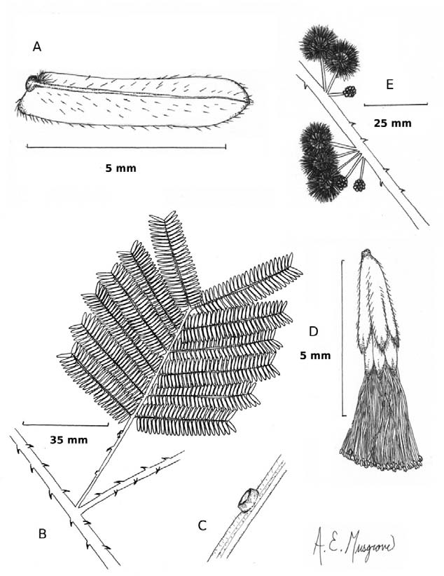

A New Senegalia (S. seigleri, Fabaceae: Mimosoideae) from Bahia, Brazil
Ebinger, J. E.
Abstract
Full text
Full text is available as a scanned copy of the original print version.
Get a printable copy (PDF file) of the
complete article, or click on a page image below to browse page by page.
Links are also available for
Selected References.
Images in this article

Figure 1 A. Leaflet, abaxial view; B. Leaf and portion of stem; C. Petiolar gland; D. Flower; E. portion of pseudoinflorescence